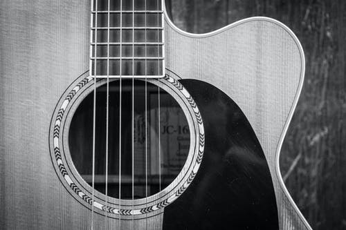
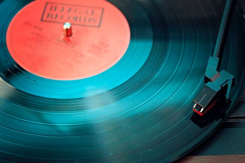
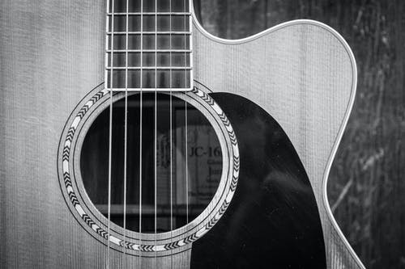
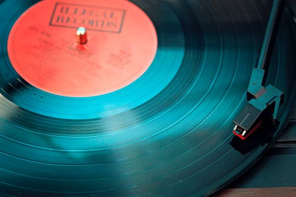

-

Lo sviluppo web e la tecnologia
Mi chiamo Massimo Russo e sono uno junior web developer. Ho una laurea triennale in informatica conseguita nel 2012 presso l'università degli studi di basilicata, ho lavorato per un breve periodo come stagista sempre nel campo dello sviluppo web, poi come operatore di back office, attualmente ricopro il ruolo di web developer autonomo
-
la chitarra
Suono la chitarra da circa 10 anni sicuramente perchè mi ha sempre incuriosito come strumento. Ho iniziato da autodidatta e ancora oggi seguo corsi e master per perfezionare la mia tecnica
-
Il sax
Suono il sax sin dall'eta' di 9 anni.Ho iniziato per gioco, spinto da mio padre; all'inizio lo vedevo come uno strumento strano, ma nel corso del tempo ne ho scoperto tutta la sua bellezza e apprezzato ancora di più